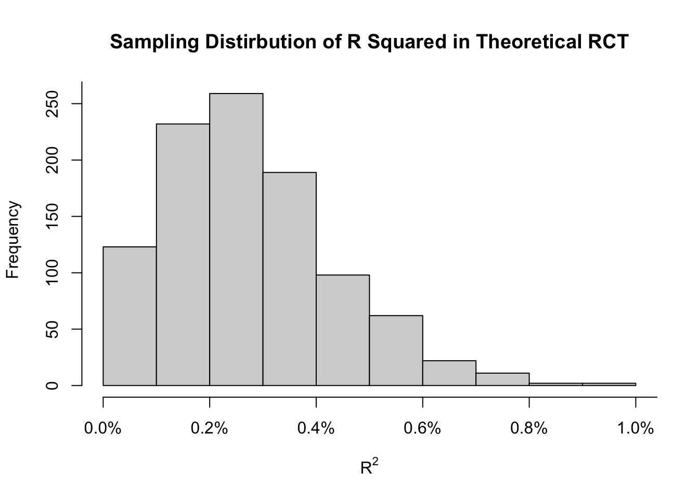

To the best of twitter’s ability, it seems the seemingly never ending bad takes on R squared as of late could be attributed to this tweet by Nassim Taleb.
The tweet is a quote tweet of another user showing a scatter plot with a regression line, seemingly conveying that more plutocracy is associated with more murders. The quoted tweet concludes “Hmm .. maybe inequality really is structural violence”, which is what I anticipate caught Taleb’s attention.
But I’m not so much interested in the cause as I am the consequences. After that tweet, so many people came out and criticized the quoted tweet for…the regression’s R squared? Many claiming that the R squared was too low to support the author’s conclusion that inequality is structural violence.
These people are right for the wrong reasons. The author is not permitted to make such a conclusion on the basis of a simple regression alone, but the reason for that has nothing to do with the R squared.
In this post, I examine:
- What R squared (a.k.a coefficient of determination) is
- What it is and isn’t good for, and
- Try to identify exactly why people dig in their heels that a low R squared means the inference is not valid (or at least not reliable).
I will focus almost exclusively on the coefficient of determination found in most OLS outputs, rather than say generalized measures of R squared or pseudo R squared which have more to do with likelihood ratio statistics and are more useful in prediction problems.
The Coefficient of Determination is Proportional to The Ratio of Residual Variance to Marginal Variance
The coefficient of determination is
\[ R^2 = 1 - \dfrac{\sum_j (y_j - \hat{y}_j)^2}{\sum_j (y_j - \bar{y}_j)^2} \>.\]
Do a little algebra1 and
\[ \begin{align} &= 1 - \dfrac{\frac{1}{n}}{\frac{1}{n}}\dfrac{\sum_j (y_j - \hat{y}_j)^2}{\sum_j (y_j - \bar{y}_j)^2} \\ &= 1 - \dfrac{\hat{\sigma}^2_{y\mid x}}{\hat{\sigma}^2_y} \\ \end{align}\]
you see that \(R^2\) is proportional to the ratio of residual variance \(\hat{\sigma}^2_{y\mid x}\) to sample marginal variance \(\hat{\sigma}^2_y\). That’s it, that is all it measures; how much of the variance in the marginal distribution can be attributed to variation in the covariates. This is also why the statistic is often interpreted as “proportion of variance explained”.
The Coefficient of Determination Bears No Information on Causation or Reliability of Inference
Many of the complaints about R squared being too low go something like
“…so bascially no connection that couldn’t be explained by unnoticed/ignored confounders”
or
“R square is 18% how is it a good fit…But would you conclude the effect with such low R squared.”
There are many more, but these are just two worth mentioning. What do these commenters mean here?
It would seem that confounding is suspected of the relationship. I agree; simple OLS is basically an examination of correlation and we all know correlation is not definitely evidence of causation. But R squared does not tell us about the presence or absence of confounding. In fact, de facto cases of causation can have low r squared. Here is an example.
Suppose you run a randomized control trial on a continuous in which the outcome has a standard deviation of 5 (variance of 25). You’re interested in a small effect size, but can power the experiment as much as you like. Let’s simulate this RCT to have 90% power. A t-test is the way to analyze these data to assess differences in mean outcomes, and this can be done using OLS. Given these assumptions, what do you think the expected R squared for the OLS would be?
How about less than 1%.
And yet, we have causation due to our assumptions. Clearly, large R squared has nothing to tell us about causation or the existence of an effect. Not even in theory, let alone practice. These comments just make no sense to me.
People Are Complex, Data is Noisy
Now, this previous example just provides a counter example to comments that claim results with low R squared can be brushed aside due to confounding or unreliability. I’ve clearly outlined a case where causation exists, the effects are detected with high probability, and yet the R squared is basically 0. You can’t get much lower than that.
Its a mostly mathematical type of response and I have to credit people who are able to communicate their thoughts more clearly to a non-mathematical audience than I can. I especially like this response by Stephen Martin who comments on just how complex and enormous data generating processes in social science can be. Or this response by @e_considine which uses a clever thought experiment on killing people via the roll of a die a la No Country For Old Men. Credit to many of the people who responded to my threads, and I learned a lot in communication.
But the question remains: why do people believe a large r squared is important for inference? At this point I can only hypothesize, but let me do so anyway. Perhaps what these people are doing is confusing uncertainty in the data with uncertainty in an estimate.
Footnotes
Worth mentioning here that dividing by \(1/n\) ignores degrees of freedom spent in estimating \(\hat{y}\). This probably results in a little bit of bias in the finite sample case, but let’s pretend that we have enough data and few enough observations that this does not matter much. The adjusted \(R^2\) does this propery by accounting for the degrees of freedom.↩︎